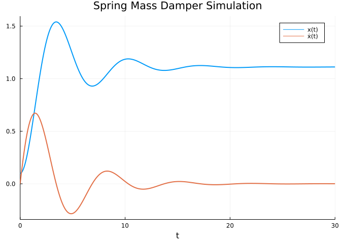

using ModelingToolkit, DifferentialEquations, Plots
Offprint
This is a section from a control theory note-set I’m writing, Exploring Control Theory. It won’t be done for years! Over time, I’ll add chapters to the open-source repository, https://github.com/cadojo/controls. Some chapters that stand on their own will be added as blog posts here!
Overview
Our end goal as controls engineers is to affect a system in some desired way. To do this, we’ll need a mathematical description of our system. This mathematical description is known as a model. There’s a famous quote about mathematical models: “all models are wrong, but some are useful”.
This is really important. We are always approximating our system by describing it with a model. The question we need to ask is “is our approximate description of our system (our model) good enough?”
Definitions
- Model: a mathematical description of a system
But what does this model look like? To answer this question, let’s first discuss system dynamics, and equations of motion.
Dynamics
If we want to affect a system, then by definition, the system should be affect-able (is that a word?) by external forces. These “forces” don’t necessarily need to be physical forces: consider the affect of introducing new predators in an ecosystem with the goal of affecting predator-prey populations.
So we have a mathematical description, and we know we’ll need some changing parameter to affect the mathematical description. Sounds like we need equations! The equations that govern our system are often called equations of motion. Any system that changes due to some external “force” is known as a dynamical system by definition.
The first step to any controls problem is identifying the dynamics; this usually means defining the equations of motion for our system. A set of equations of motion which describe our dynamical system is our model.
Example
A really common system in engineering is known as the spring-mass-damper. We can roughly describe this system as a block on a table, which is connected to a spring. We can force (a.k.a. affect) this system by pulling on the block to extend or compress the spring.
Model Construction
Let’s figure out our equations of motion. The following question is usually a useful starting point: “what are the forces on our system?” We know we’ll have one external force: us pulling or pushing on the block! Let’s call this external force \(f_e\). We’ll also have a force due to the spring, and a force due to the friction between the block and the table. The force due to the spring will be proportional to the position of the block with respect to the spring’s neutral position: let’s call the spring constant \(k\). The force due to friction will be proportional to the velocity of the block (let’s forget about static friction for now): let’s call the coefficient of friction \(d\).
With all of the forces identified, we can start constructing the eqautions of motion for this system. If we call our block’s position \(x\), then the acceleration \(\ddot{x}\) will be equal to the sum of our external force \(f_e\), the spring force \(k x\), and the force due to friction \(d \dot{x}\). Summing these forces produces the following (common) spring-mass-damper equation, where \(m\) is the mass of the block.
\[f_e = m \ddot{x} + d \dot{x} + k x \tag{1}\]
We have our model! This is a second-order differential equation (Equation 1). It helps to divide all variables into two groups: parameters, and states. States describe the system at some point in time. In this case, state variables answer the following questions: “where is the block, what is the velocity of the block, and what is the acceleration of the block?” One set of valid state variables for this system is \(x\) and \(\dot{x}\); we don’t need to include \(\ddot{x}\) in our list of state variables because we can calculate \(\ddot{x}\) from \(x\) and \(\dot{x}\).
Note
We say “one set of state variables” because there may (and nearly always are) other valid state representations that could completely describe this system! State variables are not unique.
If we leave states as symbolic, and then look to the equation(s) of motion of a system, the parameters describe a specific instance of a system. Put another way, no matter what values \(f_e\), \(d\), and \(k\) take, this equation of motion is identifiable as a spring-mass-damper. For this reason, we can specify \(f_e\), \(d\), and \(k\) as parameters. We can assume a unit mass for the block for now.
Note
The parameter \(f_e\) is our control parameter in this example, because we can change \(f_e\) to affect our system. For now, let’s not differentiate between control parameters and non-control parameters.
Coding our Model
We can simulate these dynamics with Julia’s DifferentialEquations package. If you’re familiar with MATLAB, DifferentialEquations provides numerical integration solvers that are similar to MATLAB’s ode45 (and similar) solvers. We can use the ModelingToolkit package to conveniently put our model to code, and interface with DifferentialEquations for simulation.
Now that we have access to ModelingToolkit, let’s build the model!
@parameters t fₑ d k
@variables x(t) ẋ(t)
δ = Differential(t)
eqs = [
δ(x) ~ ẋ,
δ(ẋ)~ - d*ẋ - k*x + fₑ
]
model = ODESystem(eqs, t, [x, ẋ], [fₑ, d, k]; name = :HarmonicOscillator)Model HarmonicOscillator with 2 equations States (2): x(t) ẋ(t) Parameters (3): fₑ d k
Simulating our Model
With model defined above, we can use DifferentialEquations to simulate our system. Of course, to do this we’ll need to specify numerical values for our parameters, and initial conditions (the simulation starting point) for our state variables. The code below specifies some arbitrary initial conditions and constant parameter values, and simulates the resulting dynamics.
problem = let x₀ = 0.1, ẋ₀ = 0.0, dₙ = 0.5, kₙ = 0.9, fₙ = 1.0, Δt = 30.0
ODEProblem(
model,
[x => x₀, ẋ => ẋ₀],
(0.0, Δt),
[d => dₙ, k => kₙ, fₑ => fₙ]
)
end
solutions = solve(problem, Tsit5(); reltol = 1e-12, abstol = 1e-12)
plot(solutions; linewidth = 2, dpi = 130, title = "Spring Mass Damper Simulation")